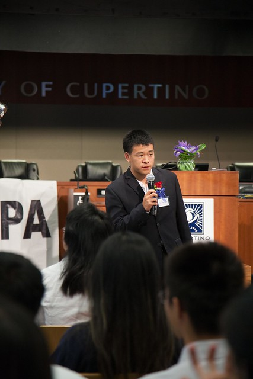
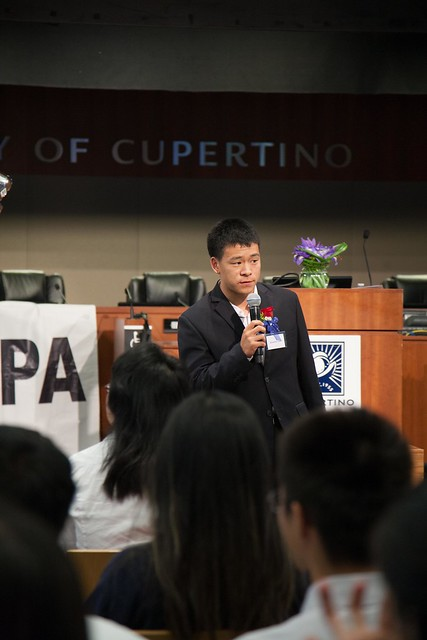
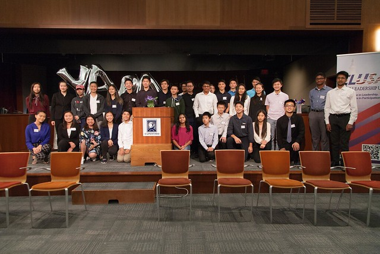

Young American Policy Advocates (YAPA) Summer Camp
7/14/19
This weekend concludes the first successful year of the YAPA summer program! I had the privilege of working with some very bright individuals to help put this camp together. We had a total of about thirty students chosen from a pool of sixty applicants. Information about the camp itself can be found at our site.
My main role, apart from planning the program, was to design a series of government lectures from the city level going upward. Because YAPA is focused on creating policy, hoping to empower students to submit bills and white papers of their own, it is cruicial they understand how government works. I've included the presentation I created here, which culminates a lot of the things I too have learnt through this experience. It is by no means flawless, and I'd love to hear about ways to improve it.
I've attached some pictures here, both of the lectures and camp events as well as our group of attendees this year — I'm hoping this amount can increase!

 

